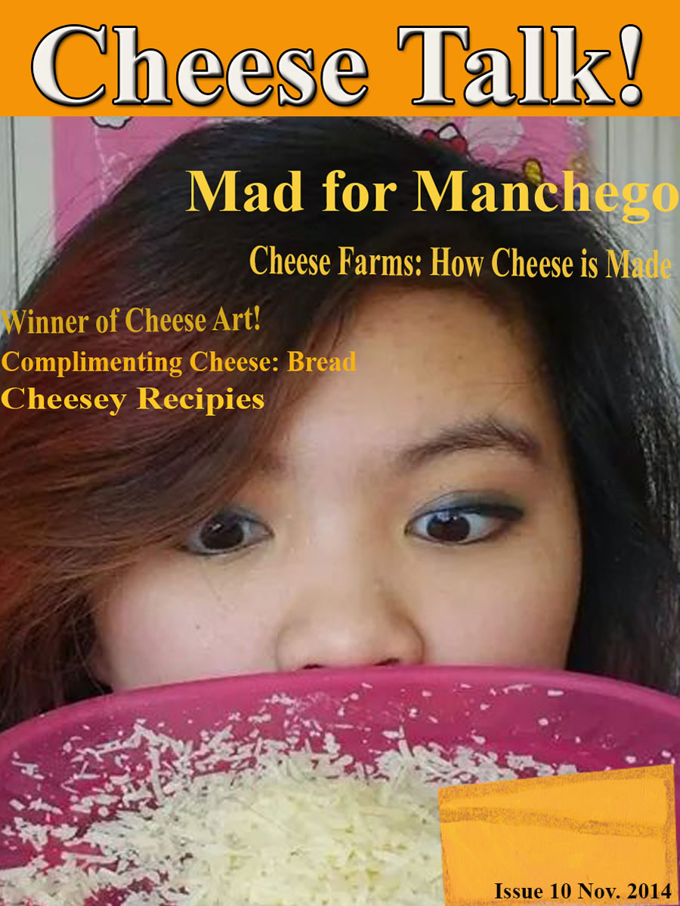
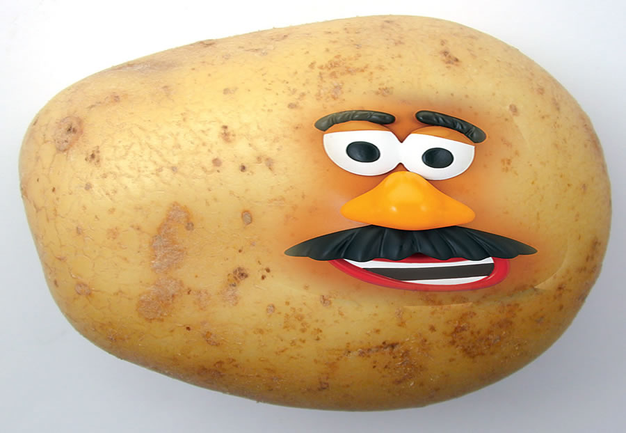
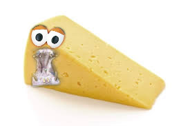

Magazine Cover done on 10/3/14. I really like Cheese, so here is a cover of a magazine idea I had if I were to create a magazine. 
Face Swap between my friends Megan Gammell (Miss Teen Utah 2012) and Tommy Ratispath? (Tommy W00t) 10/7/14
A real potato with the ficticous Mr. Potato head face. 10/14/14 

This is a cheese with hippo properties. A Cheeseyhippo. This was created on 10/14/14 
This is a picture of frames within freames, model: Jessica Bart. 9/14/14
Last Modified: Nov. 2, 2015